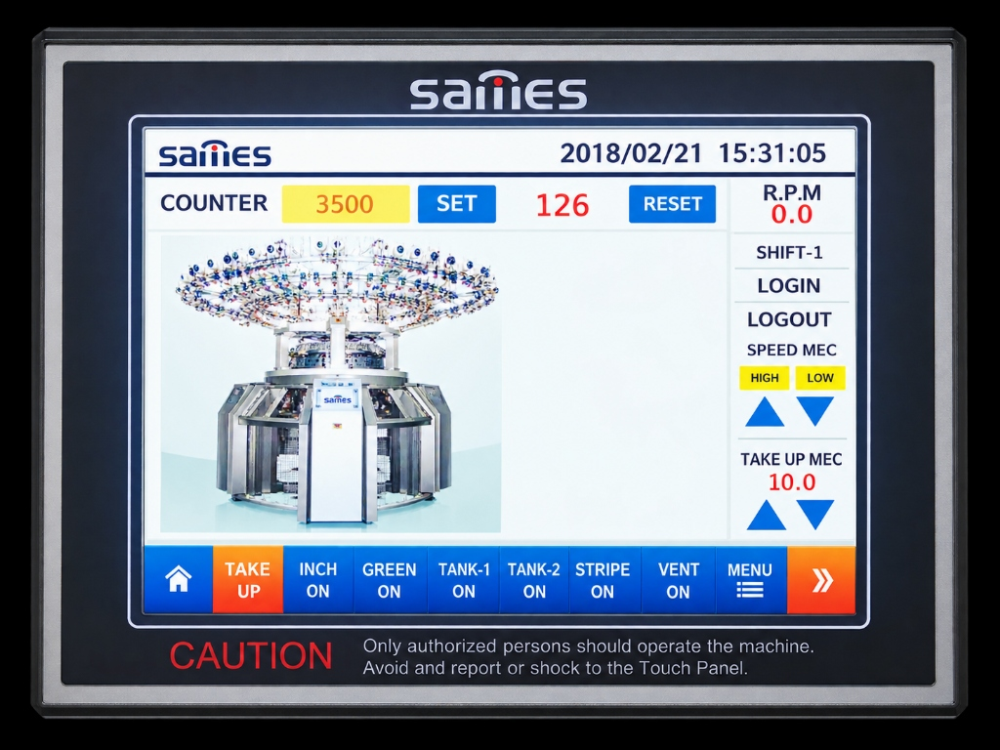
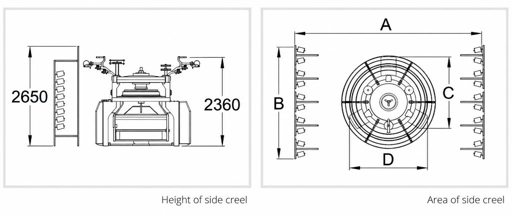

Click to Zoom (8 Photos)

Machine Components
8 HD Photos
Korean Technology Highlights
Diameter:
30" ~ 36"
Gauges:
14G ~ 40G
Feeders:
60 ~ 126 Feeds
Control:
10" Touch Monitor
INTERLOCK & RIB (SD-R2 / SD-I4)
DOUBLE JERSEY INTERLOCK & RIB CIRCULAR KNITTING MACHINE
Product Overview: Engineered in technical partnership with South Korean machinery standards (Sames Machinery). A structural design with two cam rings allows height adjustment of the cylinder cam box for knitting diverse fabric materials. Dual upper and lower ball race bearings eliminate cylinder clearance, and three counter gears in the transmission prevent clearance between cylinder and dial.

10" Touch Panel- Two cam rings can adjust the height of the cylinder cam box (verified and favorably received by customers).
- Dual arrangement (upper, lower) of ball race bearings completely blocks cylinder clearance.
- Three counter gears transmitted to the dial prevent clearance between cylinder and dial.
- Top gear and main shaft do not use a key; separate alignment maintains concentricity and planarity accurately.
- Convenient for knitting diverse fabrics using dial 2-track and cylinder 4-track needles.
- Yarn guides made of high-durability Zirconia ceramic.
- 10-Inch industrial digital touchscreen control monitor.
Technical Specification
| MODEL | INCH | GAUGE | FEEDER |
|---|---|---|---|
| SD-R2 | 30" | 12 ~ 28 | 60 |
| 34" | 12 ~ 28 | 68 | |
| 36" | 12 ~ 28 | 72 | |
| SD-I4 | 30" ~ 36" | 13.5 ~ 32 | 72 ~ 84 |
| 30" ~ 36" | 18 ~ 42 | 84 ~ 96 | |
| 30" ~ 36" | 18 ~ 42 | 96 ~ 108 | |
| 30" ~ 36" | 20 ~ 32 | 108 ~ 126 |
Dimensions (Include side creel area) [unit : mm]
| Cylinder Diameter | A | B | C | D |
|---|---|---|---|---|
| 28 ~ 32" | 4,700 | 3,950 | 1,950 | 2,080 |
| 34 ~ 38" | 4,850 | 3,950 | 2,070 | 2,210 |
※ Based on 36" × 96F, 34" × 84F
